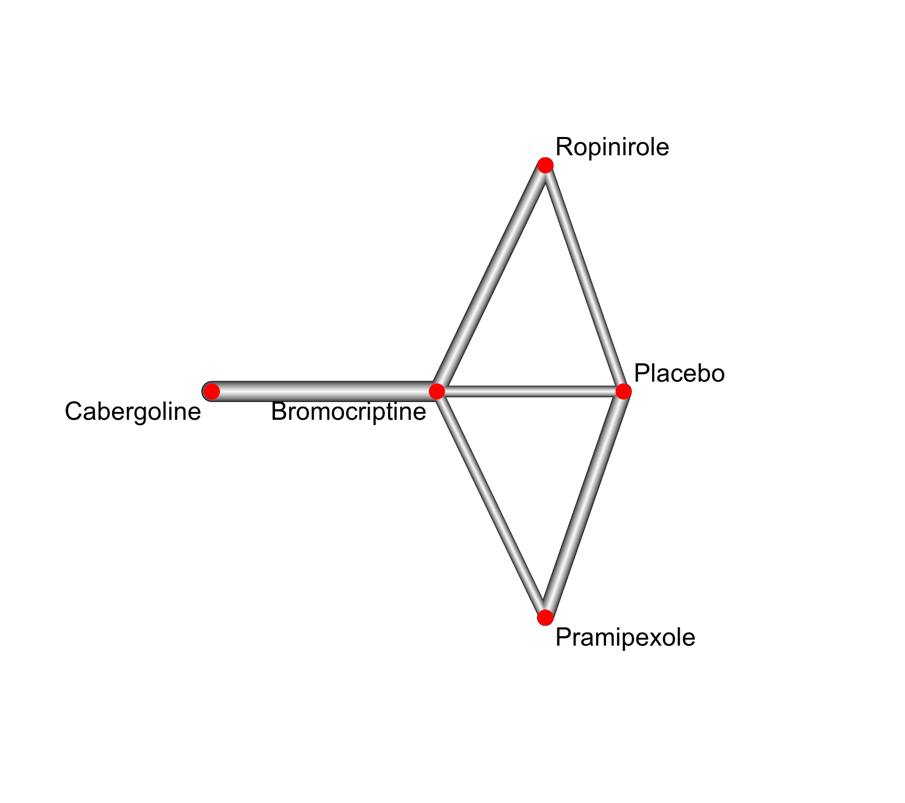

dat.franchini2012.RdResults from 7 trials examining the effectiveness of four dopamine agonists and placebo to reduce “off-time” in patients with advanced Parkinson disease.
dat.franchini2012The data frame contains the following columns:
| Study | character | study label |
| Treatment1 | character | treatment 1 |
| y1 | numeric | treatment effect arm 1 |
| sd1 | numeric | standard deviation arm 2 |
| n1 | integer | sample size arm 1 |
| Treatment2 | character | treatment 2 |
| y2 | numeric | treatment effect arm 2 |
| sd2 | numeric | standard deviation arm 2 |
| n2 | integer | sample size arm 1 |
| Treatment3 | character | treatment 3 |
| y3 | numeric | treatment effect arm 3 |
| sd3 | numeric | standard deviation arm 2 |
| n3 | integer | sample size arm 1 |
This network meta-analysis compared the effectiveness of four active treatments and placebo in patients with advanced Parkinson disease (Franchini et al., 2012). The outcome is mean lost work-time reduction in patients given dopamine agonists as adjunct therapy. The data are given as sample size, mean, and standard deviation in each trial arm.
This data set was used as an example in the supplemental material of Dias et al. (2013) where placebo is coded as 1 and the four active drugs as 2 to 5.
Dias, S., Sutton, A. J., Ades, A. E., & Welton, N. J. (2013). Evidence synthesis for decision making 2: A generalized linear modeling framework for pairwise and network meta-analysis of randomized controlled trials. Medical Decision Making, 33(5), 607–617. https://doi.org/10.1177/0272989X12458724
Franchini, A. J., Dias, S., Ades, A. E., Jansen, J. P., & Welton, N. J. (2012). Accounting for correlation in network meta-analysis with multi-arm trials. Research Synthesis Methods, 3(2), 142–160. https://doi.org/10.1002/jrsm.1049
medicine, raw mean differences, network meta-analysis
### Show results from first three studies; third study is a three-arm
### study
head(dat.franchini2012, 3)
#> Study Treatment1 y1 sd1 n1 Treatment2 y2 sd2 n2 Treatment3 y3 sd3 n3
#> 1 Lieberman 1998 Placebo -1.22 3.7 54 Ropinirole -1.53 4.28 95 <NA> NA NA NA
#> 2 Lieberman 1997 Placebo -0.70 3.7 172 Pramipexole -2.40 3.40 173 <NA> NA NA NA
#> 3 Guttman 1997 Placebo -0.30 4.4 76 Pramipexole -2.60 4.30 71 Bromocriptine -1.2 4.3 81
# \dontrun{
### Load netmeta package
suppressPackageStartupMessages(library(netmeta))
### Print mean differences with two digits
settings.meta(digits = 2)
### Transform data from wide arm-based format to contrast-based
### format. Argument 'sm' must not be provided as the mean difference
### is the default in R function metacont() called internally.
pw <- pairwise(list(Treatment1, Treatment2, Treatment3),
n = list(n1, n2, n3),
mean = list(y1, y2, y3),
sd = list(sd1, sd2, sd3),
data = dat.franchini2012, studlab = Study, sm = "MD")
### Show calculated mean differences (TE) for first three studies
pw[1:5, c(3:7, 10, 1)]
#> studlab treat1 treat2 n1 mean1 mean2 TE
#> 1 Lieberman 1998 Placebo Ropinirole 54 -1.22 -1.53 0.31
#> 2 Lieberman 1997 Placebo Pramipexole 172 -0.70 -2.40 1.70
#> 3 Guttman 1997 Placebo Pramipexole 76 -0.30 -2.60 2.30
#> 4 Guttman 1997 Placebo Bromocriptine 76 -0.30 -1.20 0.90
#> 5 Guttman 1997 Pramipexole Bromocriptine 71 -2.60 -1.20 -1.40
### Conduct network meta-analysis
net <- netmeta(pw)
net
#> Number of studies: k = 7
#> Number of pairwise comparisons: m = 9
#> Number of observations: o = 1613
#> Number of treatments: n = 5
#> Number of designs: d = 5
#>
#> Common effects model
#>
#> Treatment estimate (sm = 'MD', comparison: other treatments vs 'Bromocriptine'):
#> MD 95%-CI z p-value
#> Bromocriptine . . . .
#> Cabergoline -0.30 (-0.71- 0.11) -1.44 0.1497
#> Placebo 0.52 (-0.41- 1.46) 1.09 0.2736
#> Pramipexole -1.29 (-2.31–0.26) -2.47 0.0137
#> Ropinirole 0.05 (-0.59- 0.68) 0.14 0.8871
#>
#> Random effects model
#>
#> Treatment estimate (sm = 'MD', comparison: other treatments vs 'Bromocriptine'):
#> MD 95%-CI z p-value
#> Bromocriptine . . . .
#> Cabergoline -0.30 (-0.71- 0.11) -1.44 0.1497
#> Placebo 0.52 (-0.41- 1.46) 1.09 0.2736
#> Pramipexole -1.29 (-2.31–0.26) -2.47 0.0137
#> Ropinirole 0.05 (-0.59- 0.68) 0.14 0.8871
#>
#> Quantifying heterogeneity / inconsistency:
#> tau^2 = 0; tau = 0; I^2 = 0% (0.0%-79.2%)
#>
#> Tests of heterogeneity (within designs) and inconsistency (between designs):
#> Q d.f. p-value
#> Total 2.29 4 0.6830
#> Within designs 1.61 2 0.4473
#> Between designs 0.68 2 0.7121
### Draw network graph
netgraph(net, points = TRUE, cex.points = 3, cex = 1.5,
plastic = TRUE, thickness = "se.fixed",
iterate = TRUE, start = "eigen")

# }